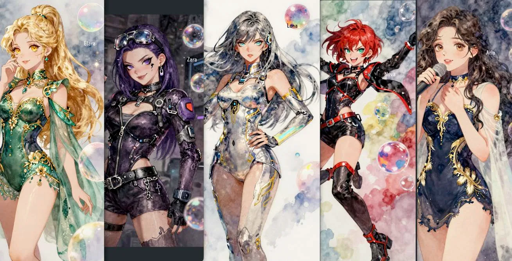

AI-generatedNow airing
썸 or 갑 Some or Boss
A 75-episode office romance (GL), produced entirely with generative AI. Twelve episodes live on YouTube Shorts.
Watch the Shorts →
AI vertical drama studio · Seoul
KISERAMA writes, casts and renders serialized vertical drama with generative AI — and ships it to YouTube Shorts, Reels and TikTok, one minute at a time.
115 scripts. 0 cameras.
By the numbers · as of Sept 2026
AI-generatedNow airing
A 75-episode office romance (GL), produced entirely with generative AI. Twelve episodes live on YouTube Shorts.
Watch the Shorts →

Live-actionCompleted
A chaebol revenge melodrama. 36 Reels drew about 1.1M views on Instagram; three original OST singles released.
Watch with English subs →
In developmentAI idol
Five AI idol members with original music, built on the same character-locking pipeline as our dramas.
Pipeline
Every episode script is decomposed into timed shots — 873 shots across 115 scripts, 5,246 seconds in total.
8 characters and 29 sets are registered as reference elements, so faces and places stay consistent across the whole season.
Shots are rendered with Seedance 2.5 omni-reference. Next step: moving from a single-slot consumer plan to parallel API generation.
Automated assembly, subtitles, audio normalization and quality checks — then straight to Shorts, Reels and TikTok.
Company
A content company founded in Seoul in September 2025, led by producers with twenty years in K-pop production (Girl's Day, KARA, Rainbow credits) and registered as a music & video production business. KISERAMA is the drama brand of 주식회사 기세등등.